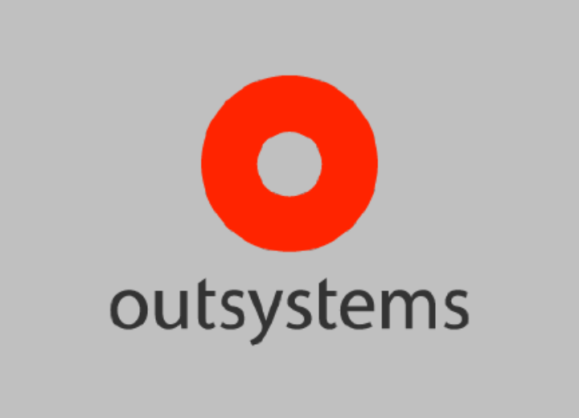

Skills



Web Developer | OutSystems Champion
OutSystems Developer with 5 years of experience and 5 certifications, well-versed in JavaScript, SQL, HTML, CSS, C#, and React. As an engineering graduate, my passion for computer technology has driven me to code throughout my academic and professional journey.
In early 2021, I embraced OutSystems development, and proactively updated my IT knowledge to excel in the industry standards. Currently contributing my talents as an OutSystems Developer at darwinLabs, I eagerly welcome new challenges to push the boundaries of innovation.
Arthur J. Gallagher - PenMarine App
(August, 2024)
PenMarine is an application for the Pen Underwriting's specialist marine insurance market.
The project included:
- Datagrid
- Advanced SQL queries
- Data export
- Data import and entities normalization from denormalized flat list of records
- Auditing implementation
- Versioning implementation
AWE - OutSystems and Camunda BPM App
(March, 2024)
This project consisted in the development of a UI in outsystems for the Camunda BPMN engine. My
role consisted in the development of all the app on the OutSystems side (the Camunda decision
tree implementation was assigned to other team members)
The project included:
- Request to Camunda BPMN decision engine
- Creation of a Rest Endpoint to get the callback from the BPMN
- Updating UI upon receiving the callback
- Realtime Server-Sent Events
- Creation of the required data structures
- Parsing the callback JSON
- State storage in database (The Camunda decision engine is stateless)
Colliers - File Hub
(July, 2023)
We developed an application that is intended to enable the different Colliers departments to
share files not only among them and also with external entities.
The 'File Hub' application will allow Colliers staff to create folders assigned to teams, to
upload files into those folders that are shared among all team members and also with external
entities through a shareable link.
The biggest technical challenge had to do with the requirement for the share link, which stated
that it should be accessible by anyone (even if outside Colliers), it should keep on working
even it the file is moved or replaced, and it should also be a shortened URL (think TinyUrl).
Colliers Australia - Inspections
(May, 2023)
We developed an app that is intended to aid Colliers valuers on their job of assessing the
features and gathering information about a building or other real estate assets.
Their current process was to fill manually a form, taking photos and notes about a given
building, with the final objective of producing an inspection document for that building.
The Inspections App will allow them to fill the form on the go, taking photos, written notes and
also voice notes. In the end the user will be able to download an excel of the inspection, as
well as all the related resources.
The biggest technical challenge had to do with a requirement for this app, which stated that the
inspection form should be created and changed in a back-office app, this brought interesting
challenges related to the data model and also in order to keep track of different versions of
the form.
Colliers - Our Listings
(July, 2022)
Our Listings is a platform to be used worldwide by Colliers, allowing it's users to register new
real-estate listings. After we helped Colliers with the development of the PoC, and with the
release of the product in the U.S. Market, the task my team was assigned with was to improve
some existing functionalities, developing new ones, refactoring, and to correct app issues.
One of the main challenges was to refactor the queries and page navigation of a large, and
post-process heavy, record database.
Order Management and Floor Shop Apps
(February, 2021)
The client was a marble stone transforming industry, and the purpose of these two applications
was to help with client order management (on the office side), and the jobs tasks progress (on
the factory floor). Maintenance task could also be programmed on the management app, and alerts
would be displayed on the factory floor app.
The Order Management is a Tradicional Web Application and is destined to be used on the office
desktop computers. The Floor Shop app is a mobile app, destined to be installed as a PWA on a
tabled fixed on a wall in a central point of the factory floor.
The main technical features were to have the two apps working with the same database so that the
data is always up-dated between apps. Also the floor shop app needed to be designed in such a
way that would allow multiple tablets to be used in the future instead of just one.